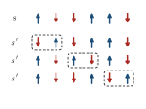
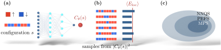
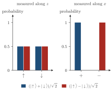

Page 3 of 9 of this session
10.3b Training the network and quantum state tomography
How do we compute the variational energy (10.3) without a sum over all the \(2^L\) configurations, and can the same network learn a state from measurements? We will now see that the energy is an average of the local energy (10.4) over configurations drawn from the Born distribution, with the gradient (10.5). We will also see that tomography fits the same network to measured counts by maximum likelihood.
\[E[\theta] \;=\; \frac{\langle \psi_\theta | H | \psi_\theta\rangle}{\langle \psi_\theta|\psi_\theta\rangle} \;=\; \frac{\sum_{s,s'} C_\theta^*(s)\, H_{s s'}\, C_\theta(s')}{\sum_s |C_\theta(s)|^2} \;\geq\; E_0, \tag{10.3}\]
This is the variational energy of Section 10.3a, the loss of a neural network quantum state. \(C_\theta(s)\) is the coefficient that the network gives for the spin configuration \(s\), \(H_{ss'}=\langle s|H|s'\rangle\) is the matrix element of the Hamiltonian between two configurations, and \(E_0\) is the ground-state energy.
To compute (10.3) without a sum over all the \(2^L\) configurations, one samples \(s\) from the Born distribution \(p(s) = |C_\theta(s)|^2/\sum_{s'}|C_\theta(s')|^2\) and evaluates the energy as an average of the sampled local energy.
The local energy of a configuration \(s\) and the energy of the network are
\[E_{\rm loc}(s) = \sum_{s'} H_{s s'}\, \frac{C_\theta(s')}{C_\theta(s)}, \qquad E[\theta] = \big\langle E_{\rm loc}(s)\big\rangle_{s\sim p}, \tag{10.4}\]
with \(p(s)=|C_\theta(s)|^2/\sum_{s'}|C_\theta(s')|^2\). The energy is an average of the local energy over configurations drawn from \(|C_\theta(s)|^2\). Each local energy needs only the few \(s'\) that \(H\) connects to \(s\).
The local energy only needs \(H\) between the configurations that are connected by the Hamiltonian, which is usually sparse and is drawn in Schematic 10.3, and not the full \(2^L\times 2^L\) matrix. The training is then done in the same way as in (10.1). We compute the energy and its gradient with respect to a real parameter \(\theta_k\) of the network,
\[\frac{\partial E}{\partial \theta_k} = 2\,\mathrm{Re}\Big[\big\langle E_{\rm loc}(s)\, O_k^*(s)\big\rangle - \big\langle E_{\rm loc}(s)\big\rangle\big\langle O_k^*(s)\big\rangle\Big], \qquad O_k(s) \equiv \frac{\partial \ln C_\theta(s)}{\partial \theta_k}, \tag{10.5}\]
and we update \(\theta_k \to \theta_k - \eta\, \partial E/\partial\theta_k\) many times, with a learning rate \(\eta\) as in any other training of a neural network, until the gradient vanishes and the energy has converged to its variational minimum.
The steps From the variational energy to the sampled local energy and its gradient
The first step is (10.4). We take the numerator of (10.3), and in the term of each \(s\) with \(C_\theta(s)\neq0\) we multiply and divide by \(C_\theta(s)\),
\[\sum_{s,s'}C_\theta^*(s)\,H_{ss'}\,C_\theta(s')=\sum_s|C_\theta(s)|^2\sum_{s'}H_{ss'}\frac{C_\theta(s')}{C_\theta(s)}=\sum_s|C_\theta(s)|^2\,E_{\rm loc}(s).\]
Dividing by \(\sum_s|C_\theta(s)|^2\) gives \(E[\theta]=\sum_sp(s)\,E_{\rm loc}(s)\), which is the average of \(E_{\rm loc}\) over \(p\). So we can replace the sum over \(s\) by an average over configurations drawn from \(p(s)\), while the sum over \(s'\) inside \(E_{\rm loc}\) stays.
For the gradient we take the simplest case first, one real parameter \(\theta\) and a real \(C_\theta(s)\). We write \(\partial_\theta C_\theta(s)=O(s)\,C_\theta(s)\), and we call \(N\) the numerator and \(Z=\sum_sC_\theta(s)^2\) the denominator of (10.3). For a real Hamiltonian, such as the one of the Heisenberg chain, \(H_{ss'}=H_{s's}\), so the two terms of \(\partial_\theta N\) are equal, and
\[\frac{\partial_\theta N}{Z}=\frac{2}{Z}\sum_sO(s)\,C_\theta(s)\sum_{s'}H_{ss'}C_\theta(s')=2\,\langle E_{\rm loc}\,O\rangle,\qquad \frac{\partial_\theta Z}{Z}=2\,\langle O\rangle.\]
The rule of the derivative of a ratio, \(\partial_\theta(N/Z)=\partial_\theta N/Z-(N/Z)\,\partial_\theta Z/Z\), then gives
\[\frac{\partial E}{\partial\theta}=2\Big(\langle E_{\rm loc}\,O\rangle-\langle E_{\rm loc}\rangle\langle O\rangle\Big).\]
For a complex \(C_\theta(s)\) and a real parameter \(\theta_k\), the derivative of \(C_\theta^*(s)\) is \(O_k^*(s)\,C_\theta^*(s)\). The term of \(\partial_\theta N\) that comes from \(C_\theta^*\) is \(Z\,\langle E_{\rm loc}\,O_k^*\rangle\). Since \(H\) is Hermitian, the term that comes from \(C_\theta(s')\) is its complex conjugate, so their sum is \(2Z\,\mathrm{Re}\,\langle E_{\rm loc}\,O_k^*\rangle\). In the same way \(\partial_\theta Z/Z=2\,\mathrm{Re}\,\langle O_k^*\rangle\), and since \(\langle E_{\rm loc}\rangle=E[\theta]\) is real, we get (10.5). So (10.5) is the derivative with respect to a real parameter \(\theta_k\). For a complex parameter \(\theta_k=x_k+iy_k\) the same steps give \(\partial E/\partial x_k=2\,\mathrm{Re}\,F_k\) and \(\partial E/\partial y_k=2\,\mathrm{Im}\,F_k\), with \(F_k=\langle E_{\rm loc}\,O_k^*\rangle-\langle E_{\rm loc}\rangle\langle O_k^*\rangle\). This holds when \(C_\theta\) is an analytic function of \(\theta_k\), as for the restricted Boltzmann machine, since then \(\partial C_\theta/\partial y_k=i\,O_k\,C_\theta\).

We should now say clearly how NNQS is related to the other variational ansätze of this course, and we can think of them as a set of nested regions. The full many-body Hilbert space is one region, and inside it there is a smaller region with all the states that an NNQS with a given architecture can reach. Projected entangled pair states, which we met in Section 7.11, are inside this NNQS region, and the matrix product states of Section 7.4 are inside the PEPS region. The parameterizations of gapped one-dimensional systems are in the innermost region, since a matrix product state is a particular and highly structured choice of network. NNQS is therefore the most expressive of the variational families of this course when the network is large enough, because it imposes the least structure on how the coefficients depend on the configuration.
Equation (10.3) is the loss function, and (10.4) and (10.5) are the training procedure, and together they make this picture a working method and not only a structure. Figure 10.2 shows all three parts, which are what the network computes, how the sampled estimate of the energy is built, and the nested picture.

10.3.1 Quantum state tomography
A second and different use of the same NNQS ansatz is quantum state tomography. Let us take a real experimental system in some unknown state \(|\psi\rangle\), and let us say that the only access that we have to it is through projective measurements. We measure the state of every spin, and the system collapses to one configuration \(s\) with probability \(|C(s)|^2\). If we repeat the measurement many times, we obtain a set of observed configurations that are distributed according to \(|C(s)|^2\). However, we never observe \(C(s)\) itself but only its modulus squared, and to do this for all the \(2^L\) configurations one by one is the same exponential problem that we started with.
The solution has the same structure as the ground-state search above. We parameterize the unknown amplitude and phase with a network, for instance a restricted Boltzmann machine, or with two separate networks, one for \(|C_\theta(s)|\) and one for its phase. Then we fit \(\theta\) by maximum likelihood to the observed measurement outcomes, instead of minimizing an energy. In practice, one maximizes \(\sum_{s} n(s) \ln p_\theta(s)\) over \(\theta\), where \(n(s)\) counts how many times the configuration \(s\) was observed and \(p_\theta(s) = |C_\theta(s)|^2/\sum_{s'}|C_\theta(s')|^2\) is the probability predicted by the network. With counts in more than one basis, this reconstructs an approximation to the unknown wavefunction with a network of far fewer parameters than \(2^L\), and this is what makes it useful as an experimental tool, since nobody can run a tomography experiment that needs an exponential number of measurements.
Tomography fits the network to the counts \(n(s)\) of the measured configurations,
\[\max_\theta\ \sum_s n(s)\,\ln p_\theta(s), \qquad p_\theta(s)=\frac{|C_\theta(s)|^2}{\sum_{s'}|C_\theta(s')|^2}.\]
When \(p_\theta\) is free on every configuration, the maximum is at the observed frequencies \(n(s)/\sum_{s'}n(s')\). Counts in one basis fix \(|C(s)|\) and not its phase.
The energy of a network state is
\[E[\theta]=\frac{\sum_{s,s'}C_\theta^*(s)\,H_{ss'}\,C_\theta(s')}{\sum_s|C_\theta(s)|^2}.\]
We write it as an average of a local energy \(E_{\rm loc}(s)\) over \(p(s)=|C_\theta(s)|^2/\sum_{s'}|C_\theta(s')|^2\). Which expression is \(E_{\rm loc}(s)\)?
Show the answers
- A. ✗ False
This is false. Take the singlet of \(H=J\,\mathbf S_1\cdot\mathbf S_2\), with \(C(\uparrow\downarrow)=1/\sqrt2\) and \(C(\downarrow\uparrow)=-1/\sqrt2\). At \(s=\uparrow\downarrow\) this gives \(-3J/8\), and not the energy \(-3J/4\) of the singlet.
- B. ✗ False
This is false. It loses the sign of \(C\). On the singlet at \(s=\uparrow\downarrow\) it gives \(-J/4+J/2=+J/4\), which is the energy of the triplet and not \(-3J/4\).
- C. ✓ True
This is true. Times \(p(s)\) it gives \(C_\theta^*(s)\sum_{s'}H_{ss'}C_\theta(s')/\sum_{s'}|C_\theta(s')|^2\), which is the term of \(s\) in the energy. On the singlet it gives \(-3J/4\) at both \(s=\uparrow\downarrow\) and \(s=\downarrow\uparrow\).
The local energy of a configuration \(s\) is
\[E_{\rm loc}(s)=\sum_{s'}H_{ss'}\,\frac{C_\theta(s')}{C_\theta(s)}.\]
For a given \(s\), the sum over \(s'\) has only a few terms. What makes this possible?
Show the answers
- A. ✗ False
This is false. A network such as the restricted Boltzmann machine gives a non-zero amplitude for every configuration. There are \(2^L\) of them, and the sum over \(s'\) is short for another reason.
- B. ✓ True
This is true. For the Heisenberg chain of \(L=40\) spins, each of the \(39\) bonds changes \(s\) into at most one other configuration, and not into \(2^{40}\). A dense random \(H\) would not have this property.
- C. ✗ False
This is false. Sampling replaces the sum over \(s\), but not the one over \(s'\). For a dense \(H\) each sampled \(s\) would still need \(2^L\) terms of \(s'\).
In tomography we measure the spin of every site along \(z\). We fit \(\theta\) to the counts by maximum likelihood, with
\[p_\theta(s)=\frac{|C_\theta(s)|^2}{\sum_{s'}|C_\theta(s')|^2}.\]
Which information about \(C(s)\) do these data never contain?
Show the answers
- A. ✗ False
This is false. The counts follow \(|C(s)|^2\), so \(|C(s)|\) is fixed. Two states \(C(s)\) and \(C(s)e^{i\phi(s)}\) give the same counts, but they have the same modulus.
- B. ✓ True
This is true. The states \((|\uparrow\rangle\pm|\downarrow\rangle)/\sqrt2\) both give \(50\%\) and \(50\%\) along \(z\), and they differ in the phase. We need other bases to fix it.

The two states give the same probabilities along \(z\) (left) and different ones along \(x\) (right), so only the second basis sees the phase. - C. ✗ False
This is false. The ratio of the counts \(n(s)/n(s')\) gives \(|C(s)|^2/|C(s')|^2\) directly. So the relative weight is in the data, and only the phase is missing.
Show that the local energy \(E_{\rm loc}(s)\) is the same number for every \(s\) with \(C(s)\neq0\) when the state is an eigenstate of \(H\), so that the sampled energy has no statistical error. Check it on the singlet \((|\uparrow\downarrow\rangle-|\downarrow\uparrow\rangle)/\sqrt2\) of \(H=J\,\mathbf S_1\cdot\mathbf S_2\), with \(\mathbf S=\boldsymbol\sigma/2\), and compare with the state \((2|\uparrow\downarrow\rangle-|\downarrow\uparrow\rangle)/\sqrt5\).
Solution
If \(H|\psi\rangle=E|\psi\rangle\), the component of this equation on the configuration \(s\) is \(\sum_{s'}H_{ss'}C(s')=E\,C(s)\). Dividing by \(C(s)\) gives \(E_{\rm loc}(s)=E\) for every \(s\) with \(C(s)\neq0\). Every sample then gives the same number \(E\), so the average over any number of samples is \(E\) with no spread.
For two spins the elements of \(H\) are \(H_{\uparrow\downarrow,\uparrow\downarrow}=H_{\downarrow\uparrow,\downarrow\uparrow}=-J/4\) and \(H_{\uparrow\downarrow,\downarrow\uparrow}=J/2\). For the singlet, \(C(\downarrow\uparrow)/C(\uparrow\downarrow)=-1\), so
\[E_{\rm loc}(\uparrow\downarrow)=-\frac J4+\frac J2\,(-1)=-\frac{3J}4,\qquad E_{\rm loc}(\downarrow\uparrow)=-\frac J4+\frac J2\,(-1)=-\frac{3J}4.\]
For the state \((2|\uparrow\downarrow\rangle-|\downarrow\uparrow\rangle)/\sqrt5\) the two ratios are \(-1/2\) and \(-2\), which give \(E_{\rm loc}(\uparrow\downarrow)=-J/2\) and \(E_{\rm loc}(\downarrow\uparrow)=-5J/4\). With the weights \(p=4/5\) and \(1/5\) the average is \(-0.65J\), which is the energy of this state, and the spread of the samples around it is \(0.3J\).
In a calculation, the spread of \(E_{\rm loc}\) over the samples is zero at an eigenstate. A spread that stays finite therefore tells that the network has not reached an eigenstate yet, and it does so with the same samples that give the energy.
This session has no companion notebook, so (10.3) to (10.5) and the tomography likelihood above are the complete derivation.